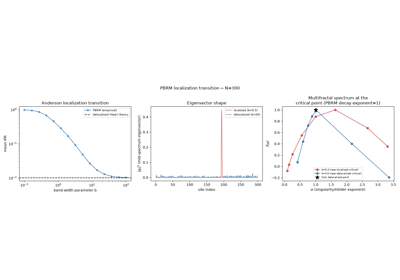
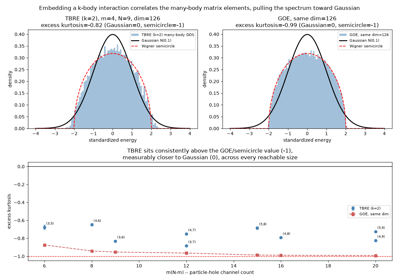
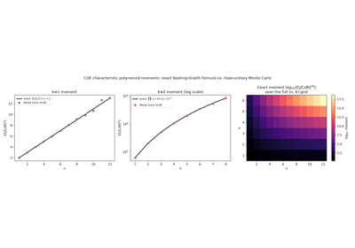
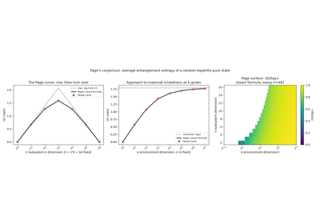
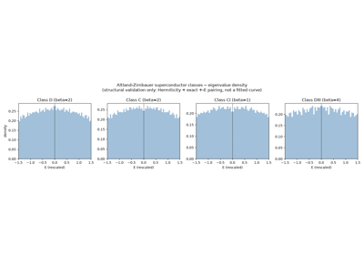
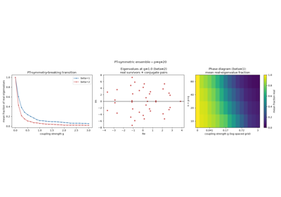
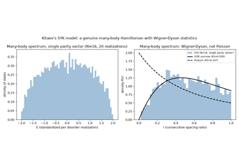

Breakthroughs in Random Matrix Theory#
“The miracle of the appropriateness of the language of mathematics for the formulation of the laws of physics is a wonderful gift which we neither understand nor deserve.” – Eugene Wigner, The Unreasonable Effectiveness of Mathematics in the Natural Sciences, 1960
Random matrix theory began as a curiosity in mathematical statistics,
was drafted by Eugene Wigner into nuclear physics to explain why
complicated spectra look statistically universal, and has since spread
into quantum chaos, disordered conductors, topological superconductors,
and pure mathematics far beyond its origin. The unifying idea behind
physicskit.rmt is Freeman Dyson’s insight that an ensemble’s
symmetry class, not its microscopic details, fixes its universal
statistics – an idea this package validates ensemble by ensemble
against exact theory and the original papers that discovered it. This
chronology traces that thread, with a pointer to the corresponding
implementation in this package at each stop.
1928 – Wishart and the Statistical Origin of Random Matrices#
Before random matrices had anything to do with physics, they were a tool in mathematical statistics. John Wishart derived the joint distribution of the entries of \(X^{\mathsf T}X\), the sample covariance (or scatter) matrix formed from \(m\) independent draws of an \(n\)-variate Gaussian, laying the foundation of multivariate statistics: hypothesis testing, principal component analysis, and discriminant analysis all rest on the eigenvalues of a Wishart matrix. Three decades before Wigner, and four before physicists needed it, random matrix theory already existed – as a theory of data, not of energy levels.
Implementation: physicskit.rmt.ensembles.LaguerreBetaEnsemble
and its \(\beta = 1, 2, 4\) specializations
LOE,
LUE,
LSE realize exactly this construction:
an \(m \times n\) data matrix’s covariance spectrum, for real,
complex, and quaternion entries respectively.
References: J. Wishart, “The generalised product moment distribution in samples from a normal multivariate population,” Biometrika 20A(1/2), 32-52 (1928).
1955-1958 – Wigner’s Semicircle Law#
Faced with nuclear energy levels too numerous and too complicated to compute individually, Eugene Wigner proposed modeling the nuclear Hamiltonian itself as a large random Hermitian matrix, and asking only for the statistics of its eigenvalues. For an \(n \times n\) matrix with independent, identically distributed (mean-zero, finite-variance) entries, he showed the eigenvalue density converges, after rescaling, to a universal semicircle,
regardless of the fine details of the entry distribution – a first, startling instance of what would later be called universality. This single move, treating ignorance of a Hamiltonian’s details as a probability distribution over Hamiltonians, is the founding idea of random matrix theory in physics.
Implementation: physicskit.rmt.ensembles.GOE,
GUE,
GSE (the Gaussian
\(\beta = 1, 2, 4\) ensembles) sample exactly this spectrum;
physicskit.rmt.stats.semicircle_pdf() and
semicircle_cdf() give the closed-form law,
and physicskit.rmt.validation.WignerSemicircle validates
convergence to it directly.
References: E. P. Wigner, “Characteristic Vectors of Bordered Matrices With Infinite Dimensions,” Ann. Math. 62(3), 548-564 (1955); “On the Distribution of the Roots of Certain Symmetric Matrices,” Ann. Math. 67(2), 325-327 (1958).
1956-1957 – The Wigner Surmise for Level Spacings#
Independently of the semicircle law – a statement about the limiting density of eigenvalues – Wigner turned to a second, distinct question about the same nuclear spectra: how a level’s spacing from its neighbor is distributed. In remarks at the 1956 Gatlinburg (Oak Ridge) conference on neutron and proton resonance level spacings, he proposed approximating the nearest-neighbor spacing distribution of a large random Hamiltonian by the exactly solvable \(2 \times 2\) case, giving the celebrated surmise
with \(a, b\) fixed by normalizing to unit mean spacing, and \(\beta = 1, 2, 4\) recovering the classical GOE/GUE/GSE surmises. Exact only for a \(2 \times 2\) matrix, it is nonetheless a strikingly accurate approximation to the true nearest-neighbor spacing distribution of the full \(n \times n\) ensemble as \(n \to \infty\) – a fact confirmed numerically well before it was understood why, and, alongside the semicircle law, one of the two founding quantitative predictions of random matrix theory in physics: one for the bulk density, the other for local level repulsion.
Implementation: physicskit.rmt.stats.wigner_surmise_pdf() and
wigner_surmise_cdf() give this closed form
for general \(\beta\);
nearest_neighbor_spacings() computes the
corresponding statistic from unfolded eigenvalues, and
physicskit.rmt.stats.RatioSurmise
gives the unfolding-free consecutive-spacing-ratio analogue (Atas,
Bogomolny, Giraud, and Roux, 2013) used to cross-check it – the same
short-range spacing statistics against which the Bohigas-Giannoni-Schmit
conjecture, below, is later tested.
References: C. E. Porter, ed., Statistical Theories of Spectra: Fluctuations, Academic Press, New York, 1965 (the standard citable reference, reproducing Wigner’s original 1956-1957 argument, which was never separately published).
1958 – Anderson Localization#
In the same year, Philip Anderson showed that sufficiently strong disorder can halt electron diffusion altogether: instead of extended Bloch-like states, the eigenstates of a disordered tight-binding Hamiltonian become exponentially localized around a few sites, and transport vanishes. This “Anderson localization” transition, governed by disorder strength and dimensionality rather than by any symmetry breaking, reshaped the theory of disordered conductors and earned Anderson a share of the 1977 Nobel Prize. Decades later, random matrix theory supplied a minimal, tunable model of the transition itself: the power-law banded random matrix (PBRM) ensemble of Mirlin, Fyodorov, Dittes, Quezada, and Seligman (1996), whose off-diagonal variance decays as a power law in distance from the diagonal, interpolating continuously between localized and extended eigenstates as its band-width parameter grows.
Implementation: physicskit.rmt.ensembles.PowerLawBandedEnsemble
implements exactly this construction, and
physicskit.rmt.stats.inverse_participation_ratio() computes the
inverse participation ratio – the standard order parameter for the
transition, O(1) when localized and shrinking toward the delocalized
Haar-vector value ipr_theory() as the band
widens. At the ensemble’s critical decay exponent, the eigenstates are
genuinely multifractal, with a band-width-dependent family of critical
statistics; physicskit.rmt.stats.singularity_spectrum() estimates
the multifractal singularity spectrum f(alpha) via finite-size scaling
of the generalized inverse participation ratio.
References: P. W. Anderson, “Absence of Diffusion in Certain Random Lattices,” Phys. Rev. 109, 1492-1505 (1958); A. D. Mirlin, Y. V. Fyodorov, F.-M. Dittes, J. Quezada, and T. H. Seligman, “Transition from localized to extended eigenstates in the ensemble of power-law random banded matrices,” Phys. Rev. E 54, 3221-3230 (1996).

Anderson Localization in Power-Law Banded Matrices
1962 – Dyson’s Threefold Way and the Circular Ensembles#
Freeman Dyson asked a sharper question than Wigner: which symmetries should govern a random Hamiltonian’s matrix ensemble at all? He showed that ordinary quantum mechanics admits exactly three possibilities, fixed by how time-reversal symmetry acts: real symmetric matrices (\(\beta = 1\), GOE) when time reversal squares to \(+1\), complex Hermitian matrices (\(\beta = 2\), GUE) when time-reversal symmetry is broken, and quaternion self-dual matrices (\(\beta = 4\), GSE) when time reversal squares to \(-1\) (Kramers degeneracy). Dyson’s “threefold way” is the reason a single integer, the Dyson index \(\beta\), organizes essentially every ensemble in this package. This group-theoretic classification appeared in a paper of its own, “The Threefold Way.” In a separate, three-part companion series published the same year, “Statistical Theory of the Energy Levels of Complex Systems,” Dyson introduced the circular ensembles – eigenvalues placed directly on the unit circle via Haar-random unitary, orthogonal, and symplectic matrices – an equivalent, rotation-invariant alternative to the Gaussian ensembles for studying universal spectral statistics.
Implementation: physicskit.rmt.ensembles.COE,
CUE,
CSE implement Dyson’s circular
ensembles at \(\beta = 1, 2, 4\); the Dyson index itself is a
first-class attribute (beta) of every
MatrixEnsemble subclass in the
package.
References: F. J. Dyson, “The Threefold Way: Algebraic Structure of Symmetry Groups and Ensembles in Quantum Mechanics,” J. Math. Phys. 3, 1199-1215 (1962) (the threefold classification); F. J. Dyson, “Statistical Theory of the Energy Levels of Complex Systems I/II/III,” J. Math. Phys. 3, 140-156, 157-165, 166-175 (1962) (the circular ensembles) – two distinct papers published the same year, not one.
1965 – Ginibre’s Circular Law for Non-Hermitian Matrices#
Jean Ginibre extended random matrix theory beyond Hermitian (and symmetric, unitary) matrices to fully general real, complex, and quaternion matrices with i.i.d. Gaussian entries and no symmetry constraint at all. Their eigenvalues are genuinely complex, and after the standard \(\sqrt n\) rescaling they fill the unit disk uniformly – the circular law,
a sharp two-dimensional analogue of Wigner’s semicircle. Ginibre proved this for Gaussian entries; two decades later Girko proposed that the same limit holds for essentially any i.i.d. entry distribution with finite variance – but his original argument for this generality had a gap, and it was Zhidong Bai who supplied a fully rigorous proof (1997) of the circular law at this level of generality, completing the universality result Girko had proposed.
Implementation: physicskit.rmt.ensembles.GinOE,
GinUE,
GinSE sample the three Ginibre
ensembles; physicskit.rmt.stats.circular_law_radial_pdf() and
circular_law_radial_cdf() give the exact
radial marginal, validated by
physicskit.rmt.validation.CircularLaw, while
physicskit.rmt.ensembles.IIDEnsemble and
GirkoElliptic extend the construction
to Girko’s universal and elliptic (correlated-entry) settings.
References: J. Ginibre, “Statistical Ensembles of Complex, Quaternion, and Real Matrices,” J. Math. Phys. 6, 440-449 (1965); V. L. Girko, “Circular law,” Theory Probab. Appl. 29, 694-706 (1984); Z. D. Bai, “Circular law,” Ann. Probab. 25, 494-529 (1997).
1967 – The Marchenko-Pastur Law#
Vladimir Marchenko and Leonid Pastur found the limiting eigenvalue density of a sample covariance matrix – a Wishart matrix – as both the number of variables \(n\) and the number of samples \(m\) grow together at fixed aspect ratio \(\gamma = n/m\). The resulting law has compact support \([(1-\sqrt\gamma)^2, (1+\sqrt\gamma)^2]\) and a characteristic square-root vanishing at both edges, and today underlies much of high-dimensional statistics: it is the reason naive sample covariance matrices are systematically distorted whenever the number of variables is comparable to the sample size, a regime ubiquitous in modern data analysis.
Implementation: physicskit.rmt.stats.mp_pdf(),
mp_cdf(), and
mp_support() give the exact law;
physicskit.rmt.validation.MarchenkoPastur validates the Wishart
ensembles (LOE,
LUE,
LSE) against it across aspect ratios.
References: V. A. Marchenko and L. A. Pastur, “Distribution of eigenvalues for some sets of random matrices,” Mat. Sb. 72(114), 507-536 (1967).
1970-1971 – French, Wong, and Bohigas-Flores: Embedded Random Matrix Ensembles#
J. B. French and S. S. M. Wong, and independently Oriol Bohigas and Jorge Flores, asked what happens to Wigner’s random-Hamiltonian idea once the interaction is known to be genuinely two-body (or k-body) rather than an arbitrary N-particle operator drawn wholesale from GOE. Instead of randomizing the full many-body Hamiltonian, they embedded a random k-body interaction into the m-particle Fock space built from N single-particle levels – the Two-Body Random Ensemble (TBRE, k=2) being the physically realistic case for nuclear shell-model spectra. The celebrated, initially counter-intuitive result: because the resulting many-body matrix elements inherit strong correlations from a shared k-body interaction (unlike GOE’s independent entries), the many-body density of states approaches a Gaussian, not Wigner’s semicircle, as m and N grow, even as short-range level statistics remain GOE-like. This split between global (Gaussian) and local (Wigner-Dyson) statistics reshaped how nuclear spectra were understood, and the embedding construction itself is the direct structural ancestor of the SYK model, four decades later.
Where \(V\) is a random Hermitian matrix on the \(\binom{N}{k}\) -dimensional space of k-particle Slater determinants, \(a_I^\dagger\) creates the k-particle state indexed by the ordered tuple \(I = i_1 < \cdots < i_k\), and the sum embeds this k-body interaction into the full m-particle Fock space built from N single-particle levels.
Implementation: physicskit.rmt.ensembles.EmbeddedGaussianEnsemble
builds exactly this construction for general k, and its k=2
specialization TwoBodyRandomEnsemble
realizes the TBRE; the package verifies both the exact k=m collapse to
the bare interaction matrix and the Gaussian-vs-semicircle density
distinction the ensemble exists to demonstrate.
References: J. B. French and S. S. M. Wong, Phys. Lett. B 33, 449-452 (1970); Phys. Lett. B 35, 5-8 (1971); O. Bohigas and J. Flores, Phys. Lett. B 34, 261-263 (1971); Phys. Lett. B 35, 383-386 (1971).

The Two-Body Random Ensemble: Gaussian, not Semicircle
1973-2000 – Montgomery’s Pair Correlation Conjecture and the Riemann Zeta Connection#
At a chance meeting at the Institute for Advanced Study in 1972, Hugh Montgomery described to Freeman Dyson the pair correlation function he had just conjectured for the zeros of the Riemann zeta function on the critical line – and Dyson recognized it immediately as exactly the pair correlation of GUE eigenvalues. Montgomery’s pair correlation conjecture (1973) proposed that the normalized spacing statistics of nontrivial zeta zeros coincide with the Gaussian Unitary Ensemble’s, tying the deepest unsolved problem in mathematics to Wigner-Dyson universality. Andrew Odlyzko’s high-precision computation of zeta zeros (1987, later pushed to billions of zeros) confirmed the match to striking numerical accuracy. Jon Keating and Nina Snaith (2000) then showed that the exact moments of the CUE characteristic polynomial correctly predict the conjectured moments of \(\zeta(1/2+it)\) itself, turning Montgomery-Dyson’s analogy into a quantitative, testable model of one of number theory’s central open problems.
Where \(Z_n(\theta) = \det(I - U e^{-i\theta})\) is the characteristic polynomial of an \(n \times n\) Haar-random unitary matrix (CUE) on the unit circle; this exact moment formula is conjectured, and numerically confirmed, to predict the leading growth of the \(2k\)-th moment of \(|\zeta(1/2+it)|\) as \(n \sim \log T / 2\pi\) (\(T\) the height on the critical line).
Implementation: physicskit.rmt.stats.keating_snaith_moment()
gives this exact CUE moment formula in closed form, and
characteristic_polynomial_empirical_moment()
computes it empirically from physicskit.rmt.ensembles.CUE
samples – the two are validated against each other directly in the
package’s test suite.
References: H. L. Montgomery, “The pair correlation of zeros of the zeta function,” Proc. Symp. Pure Math. 24, 181-193 (1973); A. M. Odlyzko, “On the distribution of spacings between zeros of the zeta function,” Math. Comp. 48(177), 273-308 (1987); J. P. Keating and N. C. Snaith, “Random matrix theory and zeta(1/2+it),” Commun. Math. Phys. 214, 57-89 (2000).

Keating-Snaith Moments of the CUE Characteristic Polynomial
1977 – The Berry-Tabor Conjecture: Poisson Statistics for Integrable Systems#
Michael Berry and Michael Tabor asked the mirror-image question to the one Bohigas, Giannoni, and Schmit would pose seven years later: what do the energy levels of a generic classically integrable system look like, statistically? Using a semiclassical torus-quantization argument, they showed that a generic integrable system’s quantized levels behave, locally, exactly like an uncorrelated homogeneous Poisson process – no level repulsion, exponential spacing decay, and a number variance growing linearly rather than logarithmically with interval length. The Berry-Tabor conjecture became the essential null model against which Wigner-Dyson universality, and the chaotic side of the Bohigas- Giannoni-Schmit conjecture below, are always measured: chaos is visible only as a deviation from Poisson.
Poisson (integrable): . . . . . . . . (clustering, no repulsion)
GOE (chaotic): . . . . . . (level repulsion, near-rigid)
Implementation: physicskit.rmt.ensembles.PoissonEnsemble
samples exactly this unit-rate Poisson point process, via partial sums
of i.i.d. Exponential(1) spacings (exact at every \(n\), not merely
asymptotic); physicskit.rmt.stats.number_variance_poisson() gives
the linear \(\Sigma^2(L) = L\) law it obeys, the baseline the
Bohigas-Giannoni-Schmit entry below is checked against.
References: M. V. Berry and M. Tabor, “Level clustering in the regular spectrum,” Proc. R. Soc. Lond. A 356, 375-394 (1977).
1980 – The Wachter Law for the Jacobi (MANOVA) Ensembles#
Kenneth Wachter found the limiting eigenvalue distribution of yet another classical multivariate statistic: the ratio of two independent Wishart-type matrices that appears in multivariate analysis of variance (MANOVA) and multiple discriminant analysis. Its random matrix realization, the Jacobi ensemble, generalizes the beta distribution the way the Gaussian and Laguerre (Wishart) beta-ensembles generalize the normal and chi-squared distributions – completing the classical trio of exactly solvable continuum-\(\beta\) ensembles built into this package.
Implementation: physicskit.rmt.ensembles.JacobiBetaEnsemble
and its specializations JOE,
JUE,
JSE;
physicskit.rmt.stats.wachter_pdf(),
wachter_cdf(), and
wachter_support() give the exact law,
validated by physicskit.rmt.validation.Wachter.
References: K. W. Wachter, “The limiting empirical measure of multiple discriminant ratios,” Ann. Statist. 8(5), 937-957 (1980).
1983 – The Pandey-Mehta GOE-GUE Crossover#
Akhilesh Pandey and Madan Lal Mehta asked a question Dyson’s threefold way treats as all-or-nothing: what happens to level statistics as time-reversal symmetry is broken gradually, e.g. by a weak magnetic field, rather than completely? They constructed a one-parameter family of Hermitian ensembles interpolating continuously between GOE (time-reversal symmetric) and GUE (time-reversal broken) – later recognized as a fixed-“time” slice of Freeman Dyson’s own 1962 Brownian-motion model for eigenvalues, the same stochastic process that reappears throughout modern random matrix universality proofs. The crossover’s transition scale was shown to shrink with matrix size (as \(1/\sqrt n\)), the first quantitative demonstration that how broken a symmetry is can be read directly off spectral statistics rather than only off the Hamiltonian’s structure.
Where \(A\) is an independent real symmetric (GOE-type) matrix, \(B\) is an independent real antisymmetric matrix (so \(iB\) is Hermitian), and \(\lambda \ge 0\) is the symmetry-breaking crossover parameter: \(\lambda = 0\) recovers GOE exactly, and level statistics approach GUE as \(\lambda\) grows.
Implementation: physicskit.rmt.ensembles.GOEGUECrossoverEnsemble
builds exactly this construction;
physicskit.rmt.stats.ratio_statistics() and
RatioSurmise track the crossover directly
via the consecutive-spacing-ratio statistic (no unfolding required) as
\(\lambda\) sweeps between the GOE and GUE surmises.
References: A. Pandey and M. L. Mehta, “Gaussian ensembles of random Hermitian matrices intermediate between orthogonal and unitary ones,” Commun. Math. Phys. 87, 449-468 (1983).
1984 – The Bohigas-Giannoni-Schmit Conjecture#
Oriol Bohigas, Marie-Joya Giannoni, and Charles Schmit conjectured that the spectral fluctuations of any quantum system whose classical limit is chaotic follow Wigner-Dyson (GOE/GUE/GSE) statistics, while systems with an integrable classical limit follow uncorrelated Poisson statistics instead – turning random matrix theory from a phenomenological model of nuclei into a universal signature of quantum chaos itself, verified since in billiards, microwave cavities, and countless numerical studies. The two regimes are most sharply distinguished not by nearest-neighbor spacing alone but by long-range spectral rigidity: a chaotic (GOE/GUE/GSE) spectrum is far “stiffer” than an uncorrelated one, its number variance growing only logarithmically rather than linearly with interval length,
Implementation: physicskit.rmt.stats.nearest_neighbor_spacings(),
wigner_surmise_pdf(), and
physicskit.rmt.stats.RatioSurmise give the short-range spacing
statistics BGS compares to a chaotic system’s numerics;
physicskit.rmt.stats.spectral_rigidity_theory() and
number_variance_poisson() implement the
long-range rigidity/Poisson contrast directly, and
physicskit.rmt.validation.check_universality() confirms these
statistics are universal across entry distributions – exactly the
robustness BGS’s conjecture requires of the “chaotic” side.
References: O. Bohigas, M.-J. Giannoni, and C. Schmit, “Characterization of Chaotic Quantum Spectra and Universality of Level Fluctuation Laws,” Phys. Rev. Lett. 52, 1-4 (1984).
1993 – Page’s Conjecture: the Average Entanglement Entropy of a Random State#
Don Page asked what a “typical” quantum state looks like, in a specific and consequential sense: if a pure state on a bipartite Hilbert space \(\mathbb C^n \otimes \mathbb C^k\) is drawn Haar-randomly, how entangled are the two subsystems on average? He conjectured – and it was soon proven – an exact closed-form answer for the average von Neumann entropy of the reduced density matrix, now called the Page curve: it rises almost linearly with the smaller subsystem’s dimension before saturating near the maximum possible entropy \(\log n\), with a calculable finite-size deficit below that maximum. Originally a statement about random matrix theory and quantum information, the Page curve became, three decades later, the central quantitative benchmark in the black hole information paradox: for information to escape an evaporating black hole, Hawking radiation’s entanglement entropy must eventually follow a Page-curve-shaped trajectory – rising, then turning over – rather than growing monotonically as Hawking’s original semiclassical calculation predicted.
Where \(n \le k\) are the two subsystem dimensions and \(\psi\) is the digamma function; this is an exact finite- \((n,k)\) result for the average von Neumann entropy (in nats) of the \(n\)-dimensional reduced density matrix of a Haar-random pure state on \(\mathbb C^n \otimes \mathbb C^k\).
|psi> on C^n (x) C^k
A |----- entangled -----| B
(n) (k >= n)
Trace out B --> rho_A, average entropy <S> approaches log(n) as k grows
Implementation: physicskit.rmt.ensembles.InducedMeasureEnsemble
(and its Hilbert-Schmidt special case \(k=n\),
HilbertSchmidtEnsemble) samples
exactly this bipartite random-state construction;
physicskit.rmt.stats.von_neumann_entropy() computes the entropy
from a sampled density matrix’s eigenvalues, and
page_curve_average_entropy() reproduces
Page’s exact closed form above for direct comparison.
References: D. N. Page, “Average entropy of a subsystem,” Phys. Rev. Lett. 71, 1291-1294 (1993).

Page’s Conjecture: the Average Entanglement Entropy of a Random State
1994 – Tracy-Widom Soft-Edge Laws#
Craig Tracy and Harold Widom found the limiting distribution of the largest eigenvalue of a Gaussian ensemble at the “soft” spectral edge, where fluctuations of size \(O(n^{-2/3})\) around the edge of the semicircle follow a universal law \(F_\beta\) (\(\beta = 2\) in 1994, \(\beta = 1, 4\) in 1996), built from the Hastings-McLeod solution of the Painleve II differential equation rather than any elementary function. The Tracy-Widom laws turned out to be a genuine capstone of universality: the same distributions later appeared in longest-increasing-subsequence combinatorics, last-passage percolation, and the KPZ universality class of stochastic growth – problems with no obvious matrix in sight.
Implementation: physicskit.rmt.stats.tracy_widom_cdf(),
largest_eigenvalues(), and
tracy_widom_edge_scale() reproduce
\(F_1, F_2, F_4\) and the soft-edge scaling exactly, validated
against the Gaussian ensembles by
physicskit.rmt.validation.TracyWidom.
References: C. A. Tracy and H. Widom, “Level-spacing distributions and the Airy kernel,” Commun. Math. Phys. 159, 151-174 (1994) (\(\beta=2\)); “On orthogonal and symplectic matrix ensembles,” Commun. Math. Phys. 177, 727-754 (1996) (\(\beta=1,4\)).
1997 – The Feinberg-Zee Single Ring Theorem#
Joshua Feinberg and Anthony Zee asked what happens to Ginibre’s circular law once the “bi-unitary invariance” that produces a filled disk is combined with a genuinely non-trivial singular value spectrum, rather than i.i.d. Gaussian entries. For \(M = U \, \mathrm{diag}(s)\, V\) with \(U, V\) independent Haar-random unitary matrices and \(s_1, \ldots, s_n\) an arbitrary singular value sequence, they conjectured – and Alice Guionnet, Manjunath Krishnapur, and Ofer Zeitouni rigorously proved fourteen years later (2011) – that the eigenvalues fill not a disk but a single annulus (never two separate rings, however exotic the singular-value distribution), with inner and outer radii fixed by just two moments of that distribution. The single ring theorem turned Ginibre’s circular law into one member of a far broader family of exactly computable non-Hermitian spectra.
Where \(\langle \cdot \rangle\) denotes the mean over the \(n\) singular values; \(r_{\text{in}} = 0\) recovers a filled disk (e.g. Ginibre), while \(r_{\text{in}} > 0\) is a genuine ring with a hole around the origin.
complex plane
. . . . . .
. .-outer ring-. .
. . : eigen- : . .
. . : values : . .
. `--r_in hole--' .
. . . . . .
Implementation: physicskit.rmt.ensembles.SingleRingEnsemble
realizes the general bi-unitarily-invariant construction for any
caller-supplied singular-value sampler;
NonHermitianWishartEnsemble
specializes it to Marchenko-Pastur-distributed singular values, giving
exact ring radii \(r_{\text{out}}=1,\ r_{\text{in}}=\sqrt{1-\gamma}\)
at aspect ratio \(\gamma = n/m\);
physicskit.rmt.stats.single_ring_radii(),
single_ring_radii_wishart_theory(),
annulus_radial_pdf(), and
annulus_radial_cdf() give the theoretical
radii and exact radial law.
References: J. Feinberg and A. Zee, “Non-Hermitian Random Matrix Theory: Method of Hermitian Reduction,” Nucl. Phys. B 504, 579-608 (1997); A. Guionnet, M. Krishnapur, and O. Zeitouni, “The single ring theorem,” Ann. Math. 174(2), 1189-1217 (2011).
1997 – The Altland-Zirnbauer Tenfold Way#
Alexander Altland and Martin Zirnbauer extended Dyson’s threefold way to Hamiltonians with particle-hole (charge-conjugation) symmetry – the setting of disordered and chaotic superconductors and superfluids, where Bogoliubov-de Gennes quasiparticle spectra are built into an enlarged Nambu space with a built-in \(\pm\lambda\) eigenvalue pairing. Adding particle-hole and chiral symmetry to Dyson’s three classes yields ten symmetry classes in total (the “tenfold way”), now the standard classification underlying the periodic table of topological insulators and superconductors.
Implementation: physicskit.rmt.ensembles.BdGClassD,
BdGClassC,
BdGClassCI,
BdGClassDIII build exactly these four
Bogoliubov-de Gennes symmetry classes, each verified to exhibit the
\(\pm\lambda\) particle-hole pairing to machine precision; the
complementary chiral classes (AIII, BDI, CII) are realized via
physicskit.rmt.ensembles.chGOE,
chGUE,
chGSE and their QCD-Dirac-operator
specializations.
References: A. Altland and M. R. Zirnbauer, “Nonstandard symmetry classes in mesoscopic normal-superconducting hybrid structures,” Phys. Rev. B 55, 1142-1161 (1997).

Altland-Zirnbauer Classes: BdG Eigenvalue Symmetry
1998 – Bender-Boettcher PT-Symmetric Quantum Mechanics#
Carl Bender and Stefan Boettcher discovered, almost by accident, that a large class of manifestly non-Hermitian Hamiltonians – symmetric under the combined operation of parity (P) and time reversal (T) – can have an entirely real, positive spectrum, challenging the textbook axiom that Hermiticity is required for real energies. Ali Mostafazadeh later clarified the mechanism: PT symmetry is equivalent, for a diagonalizable H with real spectrum, to pseudo-Hermiticity, \(PHP^{-1} = H^\dagger\) for some Hermitian invertible \(P\) – a weaker similarity-transformation condition than Hermiticity itself. As a non-Hermiticity parameter increases, real eigenvalue pairs collide and move off the real axis as complex-conjugate pairs at exceptional points, where – unlike an ordinary level crossing – eigenvalues and eigenvectors coalesce simultaneously; this PT-symmetry-breaking transition has since been observed directly in optical waveguides, microwave cavities, and other open quantum systems.
Writing \(H\) in the matching \(2\times2\) block form \(\begin{pmatrix} A & B \\ C & D \end{pmatrix}\), this pseudo-Hermiticity condition forces \(A = A^\dagger\) (\(p \times p\)), \(D = D^\dagger\) (\(q \times q\)), and \(C = -B^\dagger\).
P = diag(+1,...,+1, -1,...,-1) H = [ A B ]
p q [ -B^d D ]
g=0: block-diagonal, real spectrum --> g increases --> exceptional points
Implementation: physicskit.rmt.ensembles.PTSymmetricEnsemble
builds exactly this pseudo-Hermitian block construction;
physicskit.rmt.stats.real_eigenvalue_fraction() tracks the
symmetry-breaking transition, and
find_exceptional_points() /
eigenvector_condition_number() locate
exceptional points via the diverging eigenvector condition number that
distinguishes a true exceptional point from an ordinary crossing.
References: C. M. Bender and S. Boettcher, “Real Spectra in Non-Hermitian Hamiltonians Having PT Symmetry,” Phys. Rev. Lett. 80, 5243-5246 (1998); A. Mostafazadeh, “Pseudo-Hermiticity versus PT symmetry: The necessary condition for the reality of the spectrum of a non-Hermitian Hamiltonian,” J. Math. Phys. 43, 205-214 (2002).

PT-Symmetry Breaking in Pseudo-Hermitian Ensembles
2002 – The Dumitriu-Edelman Tridiagonal Model: a Computational Breakthrough#
For nearly five decades after Wigner, simulating a Gaussian ensemble at a general (non-integer, non-1/2/4) Dyson index \(\beta\) was not obviously possible at all – \(\beta=1,2,4\) arise from real, complex, and quaternion matrix constructions, but no such dense matrix exists for, say, \(\beta=2.7\). Ioana Dumitriu and Alan Edelman resolved this with a strikingly simple construction: a tridiagonal matrix with independent Gaussian diagonal entries and independent chi-distributed off-diagonal entries (with \(\beta\) entering only through the chi distributions’ degrees of freedom) whose eigenvalues have exactly the Gaussian beta-ensemble joint density for any \(\beta > 0\), not merely asymptotically. Beyond making the continuum-beta ensembles simulable for the first time, the tridiagonal structure diagonalizes in \(O(n^2)\) time rather than the \(O(n^3)\) a dense Hermitian eigensolve requires – the algorithmic advance that makes it practical to reach the matrix sizes large-\(n\) asymptotic theorems like Tracy-Widom actually need, and the engine quietly powering every Gaussian and Wishart ensemble already listed in this chronology.
Whose eigenvalues have exactly the Gaussian beta-ensemble joint density \(f(x) \propto \exp(-\tfrac{\beta}{4}\sum_i x_i^2) \prod_{i<j} |x_i - x_j|^\beta\), recovering GOE, GUE, GSE exactly at \(\beta = 1, 2, 4\) – without ever forming or diagonalizing a dense \(n \times n\) matrix.
Implementation:
physicskit.rmt.utils.tridiagonal.sample_hermite_beta_eigenvalues()
and sample_laguerre_beta_eigenvalues()
implement exactly this construction for the Gaussian (Hermite) and
Wishart (Laguerre) families respectively, and are the actual sampling
engine behind physicskit.rmt.ensembles.GOE/
GUE/GSE
and LOE/
LUE/LSE
at any continuum \(\beta\), not only 1, 2, 4.
References: I. Dumitriu and A. Edelman, “Matrix Models for Beta Ensembles,” J. Math. Phys. 43, 5830-5847 (2002).
2015 – Kitaev’s SYK Model and Maximal Quantum Chaos#
Building on a 1993 spin-liquid model of Subir Sachdev and Jinwu Ye, Alexei Kitaev reformulated it, in unpublished KITP talks, as an all-to-all random-interaction Majorana fermion Hamiltonian, and showed it saturates a conjectured universal bound on how fast a quantum system can scramble information – the “maximal chaos” bound later derived rigorously by Juan Maldacena, Stephen Shenker, and Douglas Stanford (2016) from the growth rate of an out-of-time-order correlator. Unlike every classical ensemble in this chronology, the SYK Hamiltonian is not built from i.i.d. matrix entries at all: it is an explicit \(q\)-body interacting Majorana Hamiltonian whose randomness lives in the coupling tensor, not the matrix representation – yet its many-body level statistics are nonetheless Wigner-Dyson, with an eightfold random-matrix symmetry-class periodicity in the fermion count \(N \bmod 8\). Its low-energy, large-\(N\) limit is holographically dual to Jackiw-Teitelboim gravity in \(1+1\) dimensions, making SYK the tightest known bridge between random matrix theory, quantum chaos, and quantum gravity – and the direct modern descendant of the embedded k-body ensembles of French and Bohigas-Flores, four decades earlier.
Where \(\gamma_1, \ldots, \gamma_N\) are \(N\) Hermitian Majorana operators satisfying the Clifford algebra \(\{\gamma_a,\gamma_b\} = 2\delta_{ab}\), \(q\) (even) fixes the interaction range (\(q=4\) the standard, maximally chaotic case), and the \(i^{q/2}\) prefactor is exactly the phase needed to make \(H\) Hermitian for any even \(q\).
Implementation: physicskit.rmt.ensembles.SYKEnsemble builds
exactly this Majorana Hamiltonian via a Jordan-Wigner tensor-product
realization of the \(\gamma\) matrices
(physicskit.rmt.ensembles.majorana_operators()), verified to
satisfy the Clifford algebra to machine precision before being trusted.
References: Kitaev’s own construction remains unpublished (KITP talks, 2015), so no direct citation is given for it here. S. Sachdev and J. Ye, “Gapless spin-fluid ground state in a random quantum Heisenberg magnet,” Phys. Rev. Lett. 70, 3339-3342 (1993) (the precursor spin-liquid model); J. Maldacena, S. H. Shenker, and D. Stanford, “A bound on chaos,” JHEP 2016, 106 (2016) (the rigorous maximal-chaos bound).

Kitaev’s SYK Model: Majorana Fermions, Wigner-Dyson Statistics